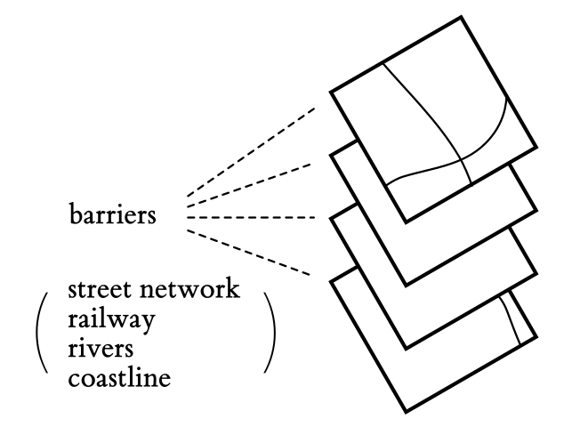
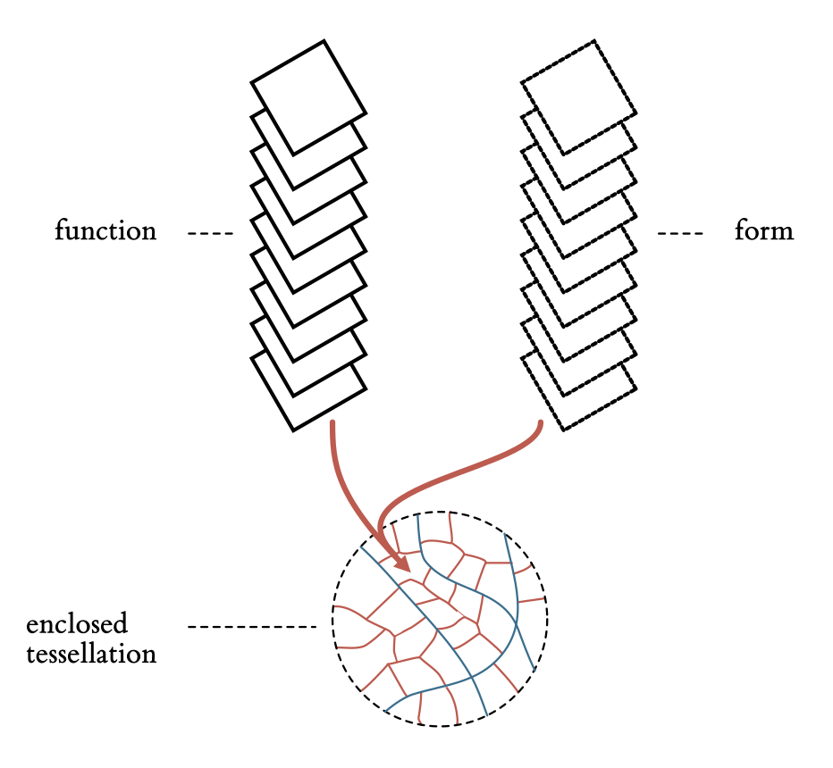

A research project to characterise British urban form and function through the notion of spatial
signatures.
Form & Function in Great Britain
The Urban Grammar project describes the British landscape through a series of types that capture the way
places look like (form) and the activities that take place within them (function). Each type
is built using millions of
granular data points and machine learning, producing a distinct and unique character that emerges from a
combination of traits. We call these bundles of form and function
spatial signatures, and they are the core building blocks of the Urban
Grammar.
Below you can find the “pen portraits” of each signature, shorthand descriptions of
the main characteristics that describe them.
Wild countryside
In “Wild countryside”, human influence is the least intensive. This signature covers large open spaces in
the countryside where no urbanisation happens apart from occasional roads, cottages, and pastures. You can
find it across the Scottish Highlands,
numerous national parks such as Lake District, or in the majority of Wales.
Countryside agriculture
“Countryside agriculture” features much of the English countryside and displays a high degree of agriculture
including both fields and pastures. There are a few buildings scattered across the area but, for the most
part, it is green space.
Urban buffer
“Urban buffer” can be characterised as a green belt around cities. This signature includes mostly
agricultural land in the immediate adjacency of towns and cities, often including edge development. It still
feels more like countryside than urban, but
these signatures are much smaller compared to other countryside types.
Open sprawl
“Open sprawl” represents the transition between countryside and urbanised land. It is located in the
outskirts of cities or around smaller towns and is typically made up of large open space areas intertwined
with different kinds of human development,
from highways to smaller neighbourhoods.
Disconnected suburbia
“Disconnected suburbia” includes residential developments in the outskirts of cities or even towns and
villages with convoluted, disconnected street networks, low built-up and population densities, and lack of
jobs and services. This signature type is
entirely car-dependent.
Accessible suburbia
“Accessible suburbia” covers residential development on the urban periphery with a relatively legible and
connected street network, albeit less so than other more urban signature types. Areas in this signature
feature low density, both in terms of population
and built-up area, lack of jobs and services. For these reasons, “accessible suburbia” largely acts as
dormitories.
Warehouse/Park land
“Warehouse/Park land” covers predominantly industrial areas and other work-related developments made of
box-like buildings with large footprints. It contains many jobs of manual nature such as manufacturing or
construction, and very little population
live here compared to the rest of urban areas. Occasionally this type also covers areas of parks with large
scale green open areas.
Gridded residential quarters
“Gridded residential quarters” are areas with street networks forming a well-connected grid-like (high
density of 4-way intersections) pattern, resulting in places with smaller blocks and higher granularity.
This signature is mostly residential but includes
some services and jobs, and it tends to be located away from city centres.
Connected residential neighbourhoods
“Connected residential neighbourhoods” are relatively dense urban areas, both in terms of population and
built-up area, that tend to be formed around well-connected street networks. They have access to services
and some jobs but may be further away from
city centres leading to higher dependency on cars and public transport for their residents.
Dense residential neighbourhoods
A “dense residential neighbourhood” is an abundant signature often covering large parts of cities outside of
their centres. It has primarily residential purpose and high population density, varied street network
patterns, and some services and jobs but
not in high intensity.
Dense urban neighbourhoods
“Dense urban neighbourhoods” are areas of inner-city with high population and built-up density of a
predominantly residential nature but with direct access to jobs and services. This signature type tends to
be relatively walkable and, in the case of some
towns, may even form their centres.
Local urbanity
“Local urbanity” reflects town centres, outer parts of city centres or even district centres. In all cases,
this signature is very much urban in essence, combining high population and built-up density, access to
amenities and jobs. Yet, it is on the lower
end of the hierarchy of signature types denoting urban centres with only a local significance.
Regional urbanity
“Regional urbanity” captures centres of mid-size cities with regional importance such as Liverpool, Plymouth
or Newcastle upon Tyne. It is often encircled by “Local urbanity” signatures and can form outer rings of
city centres in large cities. It features
high population density, as well as a high number of jobs and amenities within walkable distance.
Metropolitan urbanity
Signature type “Metropolitan urbanity” captures the centre of the largest cities in Great Britain such as
Glasgow, Birmingham or Manchester. It is characterised by a very high number of jobs in the area, high
built-up density and often high population
density. This type serves as the core centre of the entire metropolitan areas.
Concentrated urbanity
Concentrated urbanity” is a signature type found in the city centre of London and nowhere else in Great
Britain. It reflects the uniqueness of London in the British context with an extremely high number of jobs
and amenities located nearby, as well as
high built-up and population densities. Buildings in this signature are large and tightly packed, forming
complex shapes with courtyards and little green space.
Hyper concentrated urbanity
The epitome of urbanity in the British context. “Hyper concentrated urbanity" is a signature type present
only in the centre of London, around the Soho district, and covering Oxford and Regent streets. This
signature is the result of centuries of urban
primacy, with a multitude of historical layers interwoven, very high built-up and population density, and
extreme abundance of amenities, services and jobs.
Building Spatial Signatures
How are spatial signatures created?
The journey towards spatial signatures starts with a collection of
barriers. These include the street network, railway lines, rivers and a coastline.

All these barriers are considered together to subdivide space into areas fully enclosed by the barriers. We
call these areas
enclosures.
Enclosures are then combined with building footprints. Those take the role of anchors that do not partition space but act as origins to which the rest can be
“attached”.
The combination of enclosures and anchors results in a set of more granular areas we call enclosed tessellation
(ET) cells.
In Britain alone, there is more than 14 million of them!
We next use ET cells to bring together a large number of features, or characters,
capturing form and function and link them to each ET cell.

All these values are fed to a machine learning algorithm to
cluster similar ET cells in groups. In Britain, this step allows us to synthesise
over 300 characters in 16 classes.
Cells belonging to the same class that are also geographically next to each other are then combined into a
single geometry, generating a portion of land that we call a spatial
signature.
The result of this process is a map that divides the whole of Great Britain into consistent signatures.